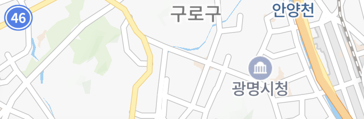
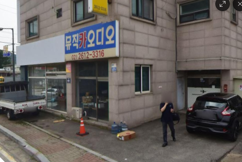
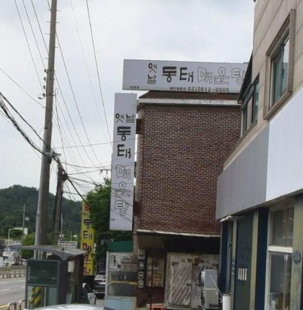
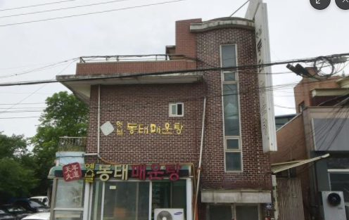
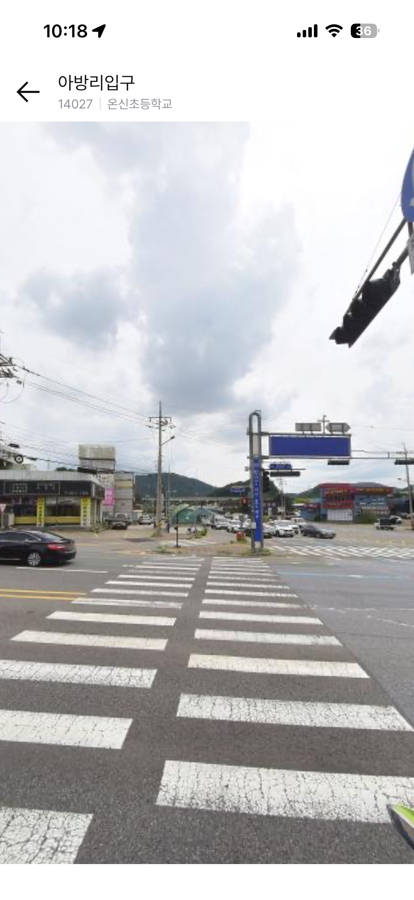
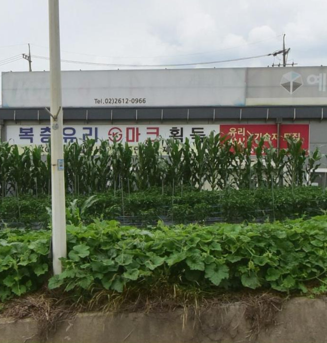

아방리입구에서 탑승해 주세요.
출발도보 19분
탑승오후 9:39
하차오후 9:48 ~ 9:57
도착도보 3분
도보 경로는 실제와 다를 수 있어요
대양식품에서 직진
은성철강 방향으로 150m
도전과기술 앞 횡단보도
우리방재산업 방면으로 횡단보도 건너기
클리너빨래방 근방 횡단보도
하늘공조시스템 방면으로 횡단보도 건너기
하늘공조시스템에서 직진
현대창호유리 방면으로 200m 직진
아방리 입구
한광해용달화물 건물을 확인해주세요
D1호차 탑승
오후 9:39 · 아방리입구
뒷골사거리에서 하차
오후 9:48 ~ 9:57
뒷골사거리에서 직진
한빛프라자 방면으로 200m
목적지 도착
하차 후 도보 3분
하늘공조시스템에서 직진
현대창호유리 방면으로 200m 직진
현대창호유리에서 길 건너기
맞은 편에 뮤직카오디오 간판이 있어요


아방리입구 온신초등학교 방면
옛날동태매운탕을 지나치지 않게 조심해요

D1호차 탑승
오후 9:39 · 아방리입구
뒷골사거리에서 하차
오후 9:48 ~ 9:57
뒷골사거리에서 직진
한빛프라자 방면으로 200m
목적지 도착
하차 후 도보 3분
현대창호유리에서 길 건너기
맞은 편에 뮤직카오디오 간판이 있어요
아방리입구 온신초등학교 방면
옛날동태매운탕을 지나치지 않게 조심해요
탑승 오후 2:08
아방리 입구
하차 오후 2:24~2:35
뒷골사거리
뒷골사거리에서 직진
한빛프라자 방면으로 200m
목적지 도착 오후 2:38
하차 후 도보 3분
현대창호유리에서 길 건너기
맞은 편에 뮤직카오디오 간판이 있어요
아방리입구 온신초등학교 방면
옛날동태매운탕을 지나치지 않게 조심해요
현대창호유리에서 길 건너기
촬영한 사진을 선택해 주세요


간단한 설명을 작성해 주세요 (선택사항)
제보해주신 사진은 셔클의 더 쉬운 길찾기를 위해 사용됩니다. 모든 사진은 사전 검수 후 반영되며 다소 시간이 소요될 수 있습니다.
촬영한 사진이 2장 있습니다
정류장의 주변 사진을 업로드해 정류장을
찾는 여정을 공유해 주세요
정류장에 가까이 근접했습니다
주변 사진을 촬영하면 셔클의 도보 여정을
개선하는 데 도움이 됩니다
뒷골사거리까지 16분
오후 2:24~2:35 도착 예정
목적지에 도착했어요.
셔클을 이용해 주셔서 감사합니다.
차량 호출과 결제는 기존과 동일합니다.
프로토타입은 호출 완료 직후부터 시작합니다!
14027 아방리입구
온신초등학교 방면
정류장 번호와 주위 사진을 확인해주세요
주위 사진과 함께 보는
도보 안내로 전환할까요?